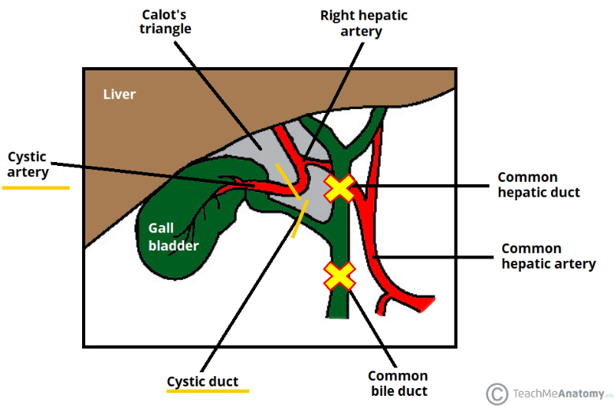
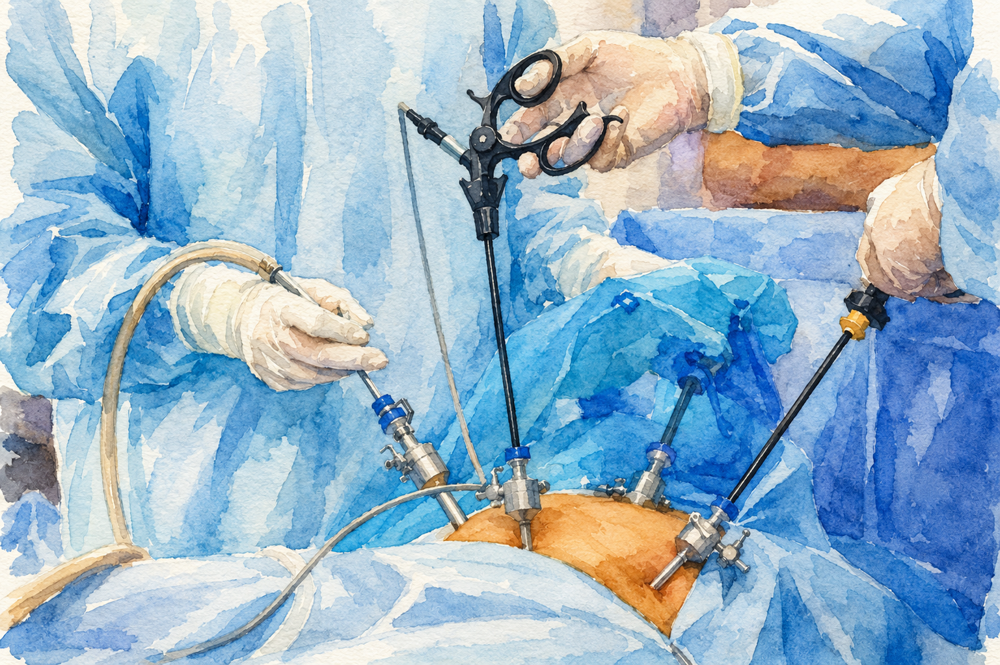
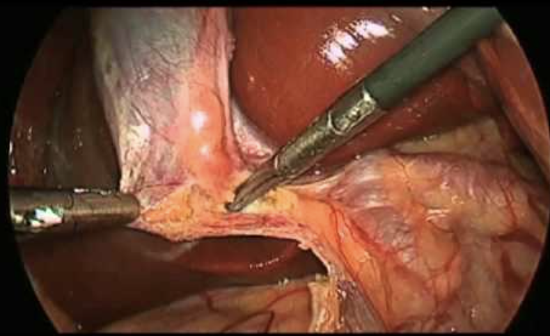
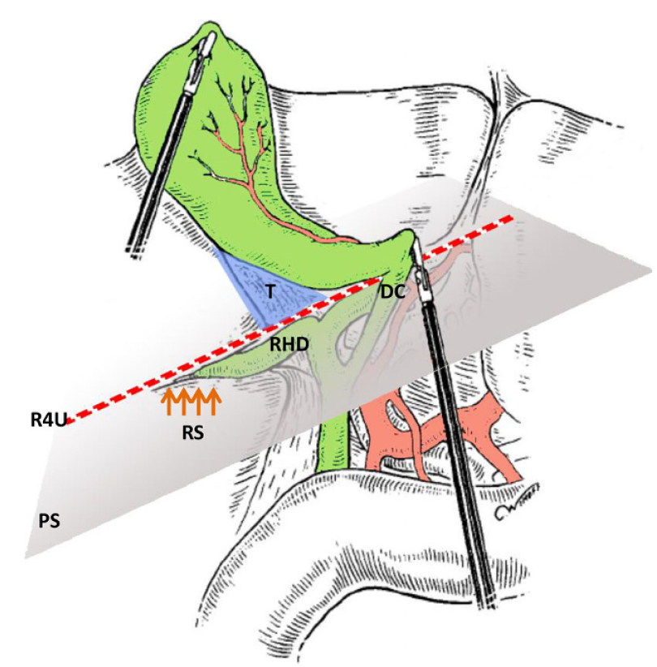
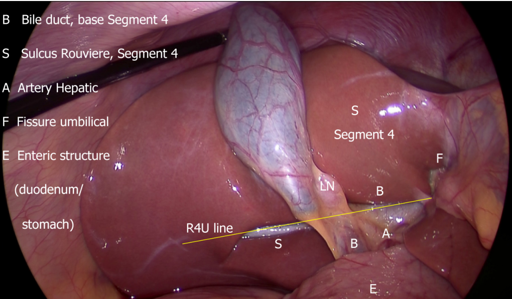
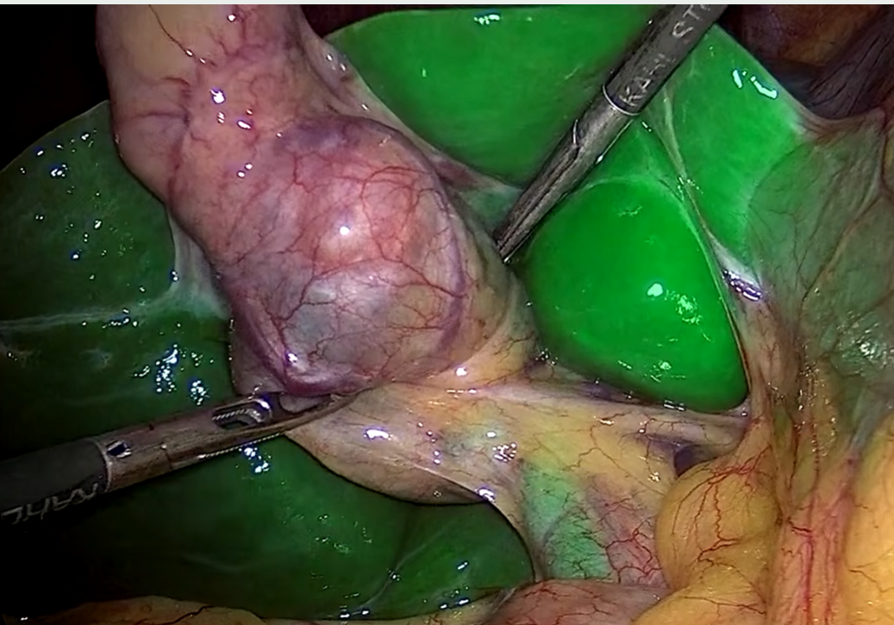
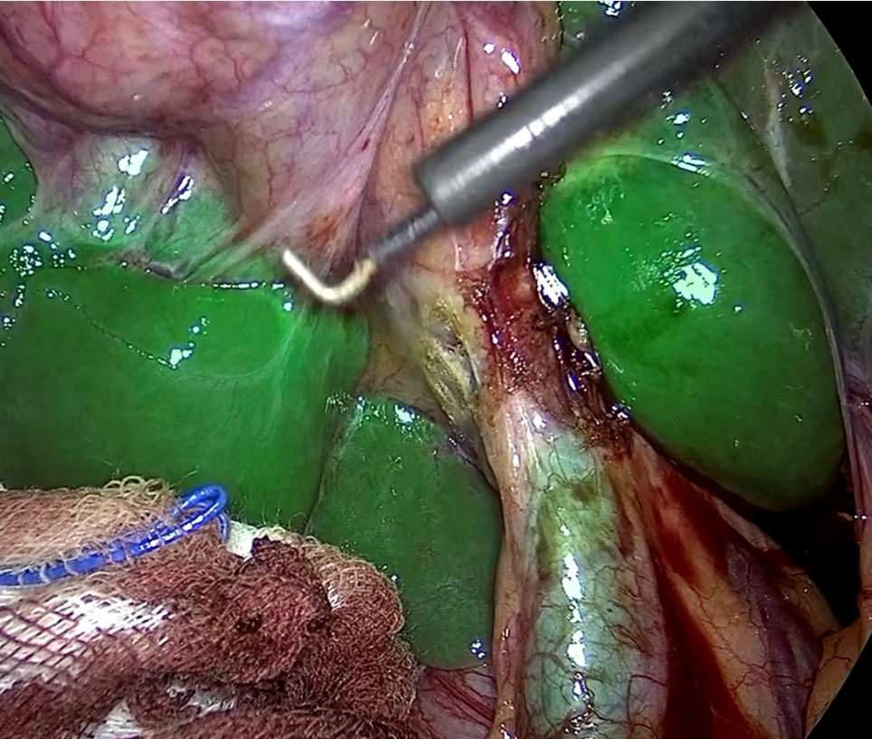
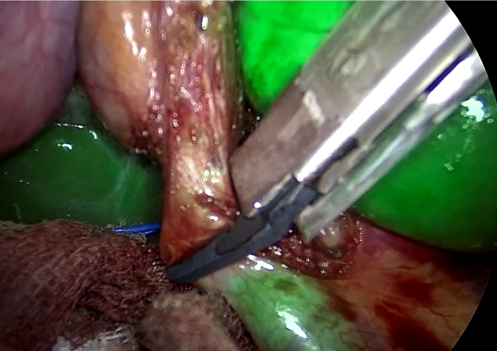

PAD
Drawing the Safe Line
AI for Surgical Guidance
Luc Vedrenne
01.07.2026
Overview
Who am I
A very short background.
What I am working on
Safe Dissection Line prediction during laparoscopic cholecystectomy.
How I am doing it
The methodology behind the prediction pipeline.
I Who am I?
IMT Atlantique
Graduated after working on tumor classification from SpyGlass video with AP-HP.
PhD defense
Under the supervision of S. Faisan and D. Fortun: joint registration of multiple point clouds in fluorescence microscopy.
PostDoc
Started a postdoc in the CAMMA team.
Safe Dissection Line Prediction
during Laparoscopic Cholecystectomy
Current postdoctoral work in the CAMMA team
with Shih Min Yin, Pietro Mascagni, and Nicolas Padoy
II Context




Most common surgery
Laparoscopic cholecystectomy is the standard treatment for gallbladder disease.
Major complication
Bile duct injury remains a rare but severe adverse event.
II Theoretical Methodology


II Simple Phase Classification



insertion
dissection
dissection
Clipping
dissection
II What data do we have?
Frame selection
- Expert-selected keyframes
- Regular sampling every 5 s pre-HCT
- Regular sampling every 30 s during HCT
Anatomical context boxes
Task-specific annotations
II Annotations
II Why is it hard?
II Why is it hard?
II Why is it hard?
Methodology
Current directions we're exploring
Divide and Conquer
Thank you
Questions?
Safe dissection line prediction through anatomical context, B-SAFE cues, CBD localization, and consistency-aware guidance.